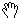
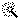

API_CursorFormID
Predefined cursor forms for customizing the user input.
API_CursorFormID
Description
APICursor_UserDefined
Cursor defined by resource ID (NOT USED)
APICursor_Default
Default cursor shape
APICursor_SpinSpin cursor (rotating beach balls)
APICursor_SystemArrow
System arrow cursor
APICursor_SystemClock
System clock cursor
APICursor_IBeamI beam cursor for text editing
APICursor_DragCursor for dragging windows
APICursor_TridentTrident cursor for dragging rollrect
APICursor_ZoomInZoom in cursor
APICursor_ZoomOutZoom out cursor
APICursor_Hand Hand cursor
APICursor_MiniHandSmall hand cursor
APICursor_CrossCross cursor
APICursor_CheckCheck cursor (indicates ...Neig)
APICursor_CheckRefCheck cursor (thick)
APICursor_BranchBranch cursor (indicates ...OnNeig)
APICursor_BranchRefBranch cursor (thick)
APICursor_XPointCross point cursor
APICursor_NormalNormal (perpendicular) cursor
APICursor_TangentTangent (osculation) cursor
APICursor_ArrowArrow cursor (selection mode)
APICursor_ArrowCheck
Check cursor in arrow mode
APICursor_ArrowCheckRefCheck cursor in arrow mode (thick)
APICursor_ArrowBranchBranch cursor in arrow mode
APICursor_ArrowBranchRefBranch cursor in arrow mode (thick)
APICursor_ArrowXPointCross point cursor in arrow mode
APICursor_ArrowNormalNormal cursor in arrow mode
APICursor_ArrowTangentTangent cursor in arrow mode
APICursor_PencilPencil shaped cursor during input
APICursor_PencilCheckCheck cursor during input
APICursor_PencilCheckRefCheck cursor during input (thick)
APICursor_PencilBranchBranch cursor during input
APICursor_PencilBranchRefBranch cursor during input (thick)
APICursor_PencilXPointCross point cursor during input
APICursor_PencilNormalNormal cursor during input
APICursor_PencilTangentTangent cursor during input
APICursor_EyeEye cursor for window/door opening
APICursor_DoubleEye
Double eye for window/door position
APICursor_HammerHammer cursor for completing input
APICursor_MagicWand Magic wand cursor
APICursor_TrimmerScissors shaped cursor
APICursor_TrimmerFull
Scissors shaped cursor (thick)
APICursor_PickerDropper shaped cursor
APICursor_PickerFullDropper shaped cursor (thick)
APICursor_InjectionInjection shaped cursor
APICursor_InjectionFullInjection shaped cursor (thick)
Remarks
The API_CursorFormID values are used to specify the cursor set for a user input process invoked from the API tool add-on.
For example of using custom cursor sets see APIIo_GetArcID.
Requirements
- Version: API 2.1 or later
- Header: APIdefs_Interface.h
See Also
API_CursorSet, API_GetPointType, API_GetLineType, API_GetArcType, API_GetPolyType, API Types